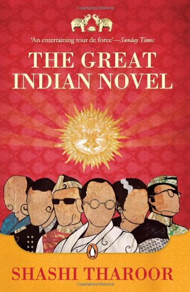

The God of Small Things
Arundhati Roy
The God of Small Things is a family drama novel written by Indian writer Arundhati Roy. Roy's debut novel, it
is a story about the childhood experiences of fraternal twins whose lives are destroyed by the "Love Laws".
Buy
Now
Wings of Fire
A. P. J. Abdul Kalam
The Wings of Fire is an autobiography of former Indian President APJ Abdul Kalam. The book covers his life
before he became the President of India and commanded the armed forces.
Buy
Now
The Discovery of India
Jawaharlal Nehru
The book provides a broad view of Indian history, philosophy and culture, as viewed from the eyes of an
Indian fighting for the independence of his country. He wrote the book during his imprisonment.
Buy
Now

Gitanjali
Rabindranath Tagore
Gitanjali is a collection of poems by the Bengali poet Rabindranath Tagore.Gitanjali or “The Song Offerings”
is a reflection of Rabindranath's consciousness, wisdom & philosophy.
Buy
Now

The Great Indian Novel
Shashi Tharoor
The Novel is a satirical novel by Shashi Tharoor, first published by Viking Press in 1989. It is
a fictional work that takes the story of the Mahabharata, the Indian epic, and recasts.
Buy
Now
Naalukettu
M. T. Vasudevan Nair
Naalukettu is a veritable depiction of the matriarchal social order of Kerala's Nair community in its final
gasp for life. The hero Appunni is a scion of a once rich and powerful family.
Buy Now
Indulekha
Chandu Menon
The old Namboothiri represents the decadence of feudalism and its polygamous practices. Indulekha, the
novel's educated heroine, dramatizes the resistance of a progressive Nair woman.
Buy
Now
Agnisakshi
Lalithambika Antharjanam
The book tells the story of a remote village of special nativity in simple style and with compassionate
humor. The backdrop of socio-cultural ambiance presented in the novelette is real and unique to that time
period in Kerala.
Buy
Now